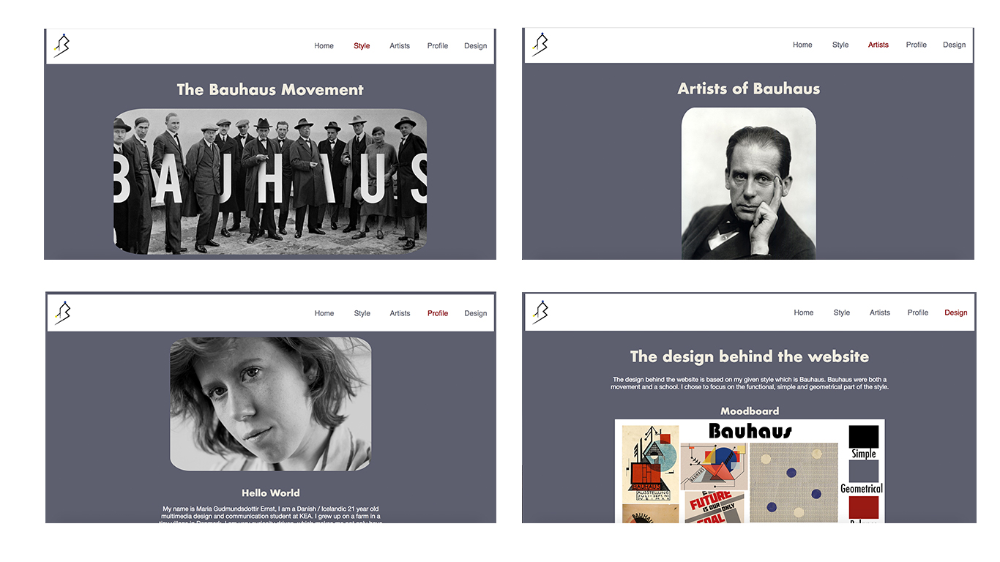

Responsive Website
The Responsive website was an individual task, which was about creating a website, that was coded in HTML, CSS grid and it had to be responsive. We were each given a style we had to show visually on the website.
The responsive website is the very first website I’ve created. My given style was the Bauhaus style/movement and even though it wasn’t a requirement to make the entire website in the given style, I wanted to challenge myself to make my the website as Bauhaus as possible. And instead of making a logo for myself I created a logo that would represent the Bauhaus style.

I wanted the website to have a simple layout, that could represent the Bauhaus style and be user friendly at the same time.
